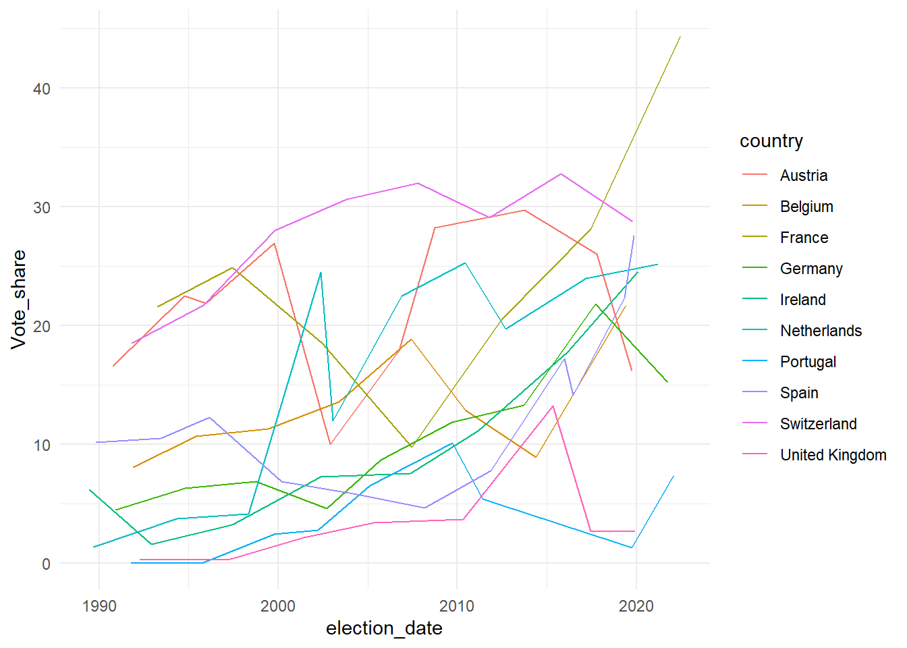
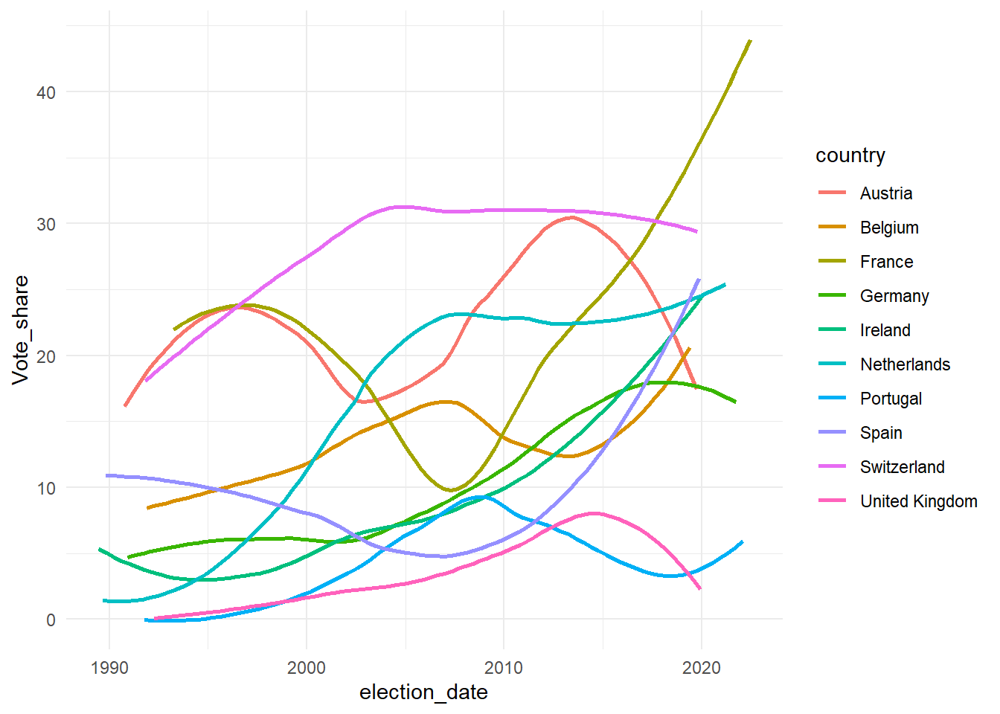

# load your packages here
pacman::p_load("tidyverse")session_08_merge_transfrom
This script
This script demonstrates how to merge data from different sources and transform it. We first load the data from The Populist and ParlGov. Second, we then transform the data and merge it.
The goal is to plot the vote share - we get this from the ParlGov data - of Eurosceptic parties - we get this from The Populist - from 1989 until 2022 for West European countries.
In the section Your turn: Add manifesto data, you can apply the learnings and merge our dataset with data from the Manifesto Project.
Setup
The following code chunk makes sure that we load all the necessary packages. If they are not installed, the function installs and loads the packages for us.
Load data
We first load the Populist data. We can load the data from our device, however, we can also download the data from the online source:
# we use the read.csv2 function because the populist data is separated with a ";"
populist <- read.csv2("https://osf.io/download/7krzm/")Next, we load the parlgov data:
# here, we use the read.csv function because the separator is a ","
parlgov <- read.csv("https://www.parlgov.org/data/parlgov-development_csv-utf-8/view_election.csv")Inspect data
We have loaded the data. Now, we should check the data structure and variables:
str(populist)'data.frame': 234 obs. of 31 variables:
$ party_name : chr "Bündnis Zukunft Österreich" "Freiheitliche Partei Österreichs" "Liste Hans-Peter Martin" "Team Stronach" ...
$ country_name : chr "Austria" "Austria" "Austria" "Austria" ...
$ party_name_english : chr "Alliance for the Future of Austria" "Freedom Party of Austria" "Hans-Peter Martin's List" "Team Stronach" ...
$ party_name_short : chr "BZÖ" "FPÖ" "Martin" "TS" ...
$ populist : int 1 1 1 1 1 1 1 1 0 1 ...
$ populist_start : int 1900 1900 1900 1900 1900 1900 1900 1900 2100 1900 ...
$ populist_end : int 2100 2100 2100 2100 2100 2100 2100 2100 2100 2100 ...
$ populist_startnobl : int 1900 1900 1900 1900 2100 1900 1900 1900 2100 1900 ...
$ populist_endnobl : int 2100 2100 2100 2100 2100 2100 2100 2100 2100 2100 ...
$ populist_bl : int 0 0 0 0 1 0 0 0 0 0 ...
$ farright : int 0 1 0 0 0 1 0 1 0 1 ...
$ farright_start : int 1900 1900 2100 2100 2100 1900 2100 1900 2100 1900 ...
$ farright_end : int 2008 2100 2100 2100 2100 2100 2100 2100 2100 2100 ...
$ farright_startnobl : int 1900 1900 2100 2100 2100 1900 2100 1900 2100 1900 ...
$ farright_endnobl : int 2008 2100 2100 2100 2100 2100 2100 2100 2100 2100 ...
$ farright_bl : int 0 0 0 0 0 0 0 0 0 0 ...
$ farleft : int 0 0 0 0 0 0 0 0 1 0 ...
$ farleft_start : int 2100 2100 2100 2100 2100 2100 2100 2100 1900 2100 ...
$ farleft_end : int 2100 2100 2100 2100 2100 2100 2100 2100 2100 2100 ...
$ farleft_startnobl : int 2100 2100 2100 2100 2100 2100 2100 2100 1900 2100 ...
$ farleft_endnobl : int 2100 2100 2100 2100 2100 2100 2100 2100 2100 2100 ...
$ farleft_bl : int 0 0 0 0 0 0 0 0 0 0 ...
$ eurosceptic : int 1 1 1 1 0 1 1 1 1 1 ...
$ eurosceptic_start : int 1900 1900 1900 1900 2100 1900 1900 1900 1900 1900 ...
$ eurosceptic_end : int 2100 2100 2100 2100 2100 2100 2100 2100 2100 2100 ...
$ eurosceptic_startnobl: int 1900 1900 1900 1900 2100 1900 2100 1900 1900 1900 ...
$ eurosceptic_endnobl : int 2100 2100 2100 2100 2100 2100 2100 2100 2100 2100 ...
$ eurosceptic_bl : int 0 0 0 0 0 0 1 0 0 0 ...
$ in_parliament : int 0 1 0 0 0 0 0 0 1 1 ...
$ partyfacts_id : int 599 463 1708 1971 6137 191 43 639 1753 553 ...
$ parlgov_id : int 1536 50 669 2150 2651 171 221 438 256 993 ...str(parlgov)'data.frame': 8947 obs. of 16 variables:
$ country_name_short : chr "AUS" "AUS" "AUS" "AUS" ...
$ country_name : chr "Australia" "Australia" "Australia" "Australia" ...
$ election_type : chr "parliament" "parliament" "parliament" "parliament" ...
$ election_date : chr "1901-03-30" "1901-03-30" "1901-03-30" "1901-03-30" ...
$ vote_share : num 44.4 34.2 19.4 1.4 0.6 29.7 34.4 31 0.5 4.5 ...
$ seats : int 32 26 15 1 1 26 25 23 1 0 ...
$ seats_total : int 75 75 75 75 75 75 75 75 75 75 ...
$ party_name_short : chr "PP" "FTP" "ALP" "none" ...
$ party_name : chr "Protectionist Party" "Free Trade Party" "Australian Labor Party" "no party affiliation" ...
$ party_name_english : chr "Protectionist Party" "Free Trade Party" "Australian Labor Party" "no party affiliation" ...
$ left_right : num 7.4 6 3.88 NA NA ...
$ country_id : int 33 33 33 33 33 33 33 33 33 33 ...
$ election_id : int 731 731 731 731 731 730 730 730 730 730 ...
$ previous_parliament_election_id: int NA NA NA NA NA 731 731 731 731 731 ...
$ previous_cabinet_id : int NA NA NA NA NA 997 997 997 997 997 ...
$ party_id : int 1898 1938 1253 1396 2299 1898 1938 1253 2299 1396 ...You can see that the populist dataframe has a column called parlgov_id and our parlgov dataframe has a column called party_id. This is how we can merge the two data frames later!
However, in this script, we are only interested in West European countries.
Transform
First, we select only West European countries.
Second, the Populist starts in 1989. Therefore, we only want to keep elections in or after 1989.
Third, we are only interested in national elections. We discard European elections.
# we create a new dataframe called parlgov_west
parlgov_west <- parlgov %>%
# we filter the parlgov dataframe to only keep these West European countries
filter(country_name %in% c("Germany",
"Austria",
"Switzerland",
"Belgium",
"Netherlands",
"France",
"Spain",
"Portugal",
"United Kingdom",
"Ireland")) %>%
# we only keep observations in or after 1989
filter(election_date >= "1989-01-01") %>%
# we only keep national elections
filter(election_type == "parliament")- Now, we merge the two datasets. We use the left_join function. https://dplyr.tidyverse.org/reference/mutate-joins.html
# we create a new data frame called parl_pop
parl_pop <- parlgov_west %>%
# we join with the populist dataframe:
# we keep all observations in parlgov west, and add all rows with matching party ids from the populist dataframe!
left_join(populist, by = c("party_id" = "parlgov_id"))
# have a look at our new dataframe
# there are many NA's because many parties are not listed in the Populist as they are not Eurosceptic, far-right, populist, etc.
head(parl_pop) country_name_short country_name.x election_type election_date vote_share
1 AUT Austria parliament 1990-10-07 42.8
2 AUT Austria parliament 1990-10-07 32.1
3 AUT Austria parliament 1990-10-07 16.6
4 AUT Austria parliament 1990-10-07 4.8
5 AUT Austria parliament 1990-10-07 2.0
6 AUT Austria parliament 1994-10-09 34.9
seats seats_total party_name_short.x party_name.x
1 80 183 SPO Sozialdemokratische Partei Österreichs
2 60 183 OVP Österreichische Volkspartei
3 33 183 FPO Freiheitliche Partei Österreichs
4 10 183 Gruene Die Grünen – Die Grüne Alternative
5 0 183 VGO Vereinte Grüne Österreichs
6 65 183 SPO Sozialdemokratische Partei Österreichs
party_name_english.x left_right country_id election_id
1 Social Democratic Party of Austria 3.7293 59 325
2 Austrian People's Party 6.4733 59 325
3 Freedom Party of Austria 8.3494 59 325
4 The Greens -- The Green Alternative 2.4604 59 325
5 United Greens Austria 2.5000 59 325
6 Social Democratic Party of Austria 3.7293 59 66
previous_parliament_election_id previous_cabinet_id party_id
1 235 873 973
2 235 873 1013
3 235 873 50
4 235 873 1429
5 235 873 1740
6 325 524 973
party_name.y country_name.y party_name_english.y
1 <NA> <NA> <NA>
2 <NA> <NA> <NA>
3 Freiheitliche Partei Österreichs Austria Freedom Party of Austria
4 <NA> <NA> <NA>
5 <NA> <NA> <NA>
6 <NA> <NA> <NA>
party_name_short.y populist populist_start populist_end populist_startnobl
1 <NA> NA NA NA NA
2 <NA> NA NA NA NA
3 FPÖ 1 1900 2100 1900
4 <NA> NA NA NA NA
5 <NA> NA NA NA NA
6 <NA> NA NA NA NA
populist_endnobl populist_bl farright farright_start farright_end
1 NA NA NA NA NA
2 NA NA NA NA NA
3 2100 0 1 1900 2100
4 NA NA NA NA NA
5 NA NA NA NA NA
6 NA NA NA NA NA
farright_startnobl farright_endnobl farright_bl farleft farleft_start
1 NA NA NA NA NA
2 NA NA NA NA NA
3 1900 2100 0 0 2100
4 NA NA NA NA NA
5 NA NA NA NA NA
6 NA NA NA NA NA
farleft_end farleft_startnobl farleft_endnobl farleft_bl eurosceptic
1 NA NA NA NA NA
2 NA NA NA NA NA
3 2100 2100 2100 0 1
4 NA NA NA NA NA
5 NA NA NA NA NA
6 NA NA NA NA NA
eurosceptic_start eurosceptic_end eurosceptic_startnobl eurosceptic_endnobl
1 NA NA NA NA
2 NA NA NA NA
3 1900 2100 1900 2100
4 NA NA NA NA
5 NA NA NA NA
6 NA NA NA NA
eurosceptic_bl in_parliament partyfacts_id
1 NA NA NA
2 NA NA NA
3 0 1 463
4 NA NA NA
5 NA NA NA
6 NA NA NA- The populist provides a dynamic classification of parties. Therefore, we have to check, if a party is actually Eurosceptic at the particular election.
# we "overwrite" the parl_pop dataframe
parl_pop <- parl_pop %>%
# we create a variable called "Eurosceptic" that takes the value "1" if
# it the party was considered eurosceptic before and after the election
mutate(Eurosceptic = case_when(election_date >= eurosceptic_start & election_date <= eurosceptic_end ~ 1,
TRUE ~ 0))- Now, we can restrict the dataset to the variables we are interested in for plotting!
# we create a new dataframe
parl_pop_plot <- parl_pop %>%
# we select only the variables we need for our first plot
# and rename some of them in one step!
# dplyr:select(new_name = old_name)
dplyr::select(country = country_name.x,
election_date,
vote_share,
Eurosceptic) - As a last step, we need to summarize the vote shares of all Eurosceptic parties for each election.
# We "overwrite" our existing data frame
parl_pop_plot <- parl_pop_plot %>%
# before we summarize, we need to group our variables
group_by(country, election_date, Eurosceptic) %>%
# now we can summarize, na.rm = TRUE omits NAs during the calculation
# this is important as some vote_shares are missing
summarize(Vote_share = sum(vote_share, na.rm = TRUE))`summarise()` has grouped output by 'country', 'election_date'. You can
override using the `.groups` argument.Plot
Finally, we can plot the vote share of Eurosceptic parties in West European countries over time!
# here, we are only interested in the vote share of Eurosceptic parties
# We create a new dataframe called "Eurosceptic_vote"
Eurosceptic_vote <- parl_pop_plot %>%
# and filter that we keep the Eurosceptic observations
filter(Eurosceptic == 1) %>%
# and change election_date to date format
mutate(election_date = as.Date(election_date))
# Now we can plot these vote shares of Eurosceptic parties
# we need out Eurosceptic_vote dataframe
ggplot(data = Eurosceptic_vote,
# election_date at the x axis to show the development over time
aes(x = election_date,
# vote share on the y axis
y = Vote_share,
# we color by country
color = country,
# and tell ggplot that we need to group the observations by country
group = country)) +
geom_line() +
theme_minimal()
Is a smoothed trend better?
ggplot(data = Eurosceptic_vote,
aes(x = election_date,
y = Vote_share,
color = country,
group = country)) +
# we set se=F to avoid confidence intervals as they would overlap too much
geom_smooth(se = F) +
theme_minimal()`geom_smooth()` using method = 'loess' and formula = 'y ~ x'
Small multiples?
# how would you produce this plot?How could we make small multiples with sparklines?
# how would you produce this plot?Your turn: Add manifesto data
First, you have to load the manifesto data. You can get the .csv file from ILIAS. Alternatively, you can create a free account here:https://manifesto-project.wzb.eu/datasets/MPDS2023a
In addition, you need to load the party information from the ParlGov database. This is the right file: https://www.parlgov.org/data/parlgov-development_csv-utf-8/view_party.csv
# load the parlgov party and the manifesto data hereNext, you have to get the identifier from the Parlgov party data (cmp), then merge it to the the existing parlgov election data. This allows you to merge the new dataframe with the Manifesto data!
- Think first about what identifiers you need to merge theses different dataframes!
# get the cmp identifier
# merge the parlgov election and party data (add the cmp variable to the eleciton data)
# merge this new data frame with the manifesto dataNow, you can proceed as before. Select the relevant variables and plot the salience and positions regarding European integration for the Eurosceptic parties. Here, you can see how these variables are defined by the Manifesto project: https://manifesto-project.wzb.eu/information/documents/visualizations
European Integration (Salience):
per108 + per110European Integration (Position):
per108 - per110
# select and transform relevant data- Finally, we can plot the salience and positions regarding European integration from Eurosceptic parties over time.
# plot the dataAdd on:
What about the salience and positions regarding European integration from non-Eurosceptic parties?
Is there a correlation between vote shares and salience/positions regarding European integration?